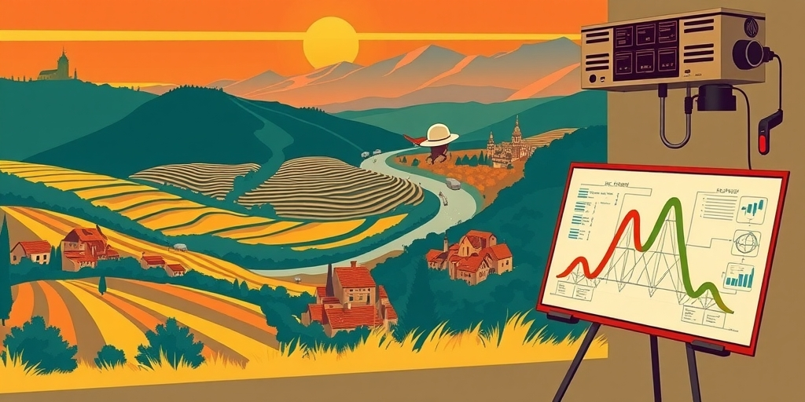
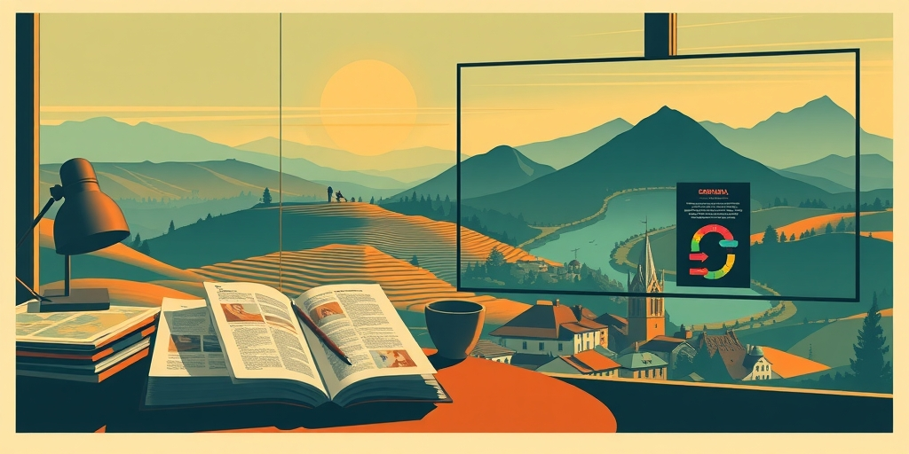

小汪老师的成长洞察 · 属于你的成长专栏
二十年前，华为客户工程部有一本内部小册子。什么样的客人进什么样的馆子，菜怎么点，酒怎么敬，座位怎么排，全都白纸黑字写着。一个木讷的工科生只要照着流程走，就能把一桌客户招待得滴水不漏。这件事真正让人震动的，不是那本小册子本身有多实用，而是它打碎了一个我们深信不疑的假设——情商是天赋，是感觉，是学不来的东西。
老华为人提起那本册子，语气总是很复杂。一边觉得它是方法论的神作，一边又觉得把人情世故写成操作手册，多少有些冰冷。但冰冷归冰冷，它管用。
册子里没有一句模糊的话。客人来自哪个省份，口味偏好是什么，第一次见面点几道菜，席间话题怎么转，都有明确指引。它把一场社交饭局，拆解成了一连串可以执行的动作。你不必懂察言观色，只要认字就行。
这本手册的存在，宣示了一种残酷的诚实：所谓的社交直觉，不过是一套未被写下来的规则。一旦写下来，谁都能用。

华为骨子里是家工科公司。任正非的底色是工程师思维：世界可以被拆解、建模、优化。这套方法论用在硬件上，造出了交换机；用在软件上，造出了操作系统；用在客户关系上，就生出了那本点菜手册。
把人际关系当成一个可被攻克的工程问题，这不是一时兴起。它是同一种思维方式在不同战场上的自然延伸。华为把客户接待部门直接命名为“客户工程部”——光这个名字，就说明了一切。接待不是艺术，是工程。
当别的公司还在依赖金牌销售的“感觉”时，华为已经把客户关系拆成了一组变量。谁负责开场，谁负责收尾，什么时候该讲技术参数，什么时候该聊孩子上学，全在流程表上。感觉不可复制，但流程可以。
那本手册背后藏着一层更深的平等主义。它不允许“情商低”成为一个人的职业天花板。一个在饭桌上手足无措的工科宅男，只要严格照着流程执行，一样能把客户招待得体面。
这打破了职场中一种隐秘的筛选机制。许多公司把情商默认为一种天赋，招人时筛掉不善言辞的，提拔时偏爱长袖善舞的。华为选择的路径是：不筛人，筛流程。组织能力可以补齐个人的短板。
这也是华为能把大批理工生批量训练成销售铁军的底层原因之一。它不依赖天才，它依赖系统。天才可能会离开，系统不会。

今天再回看那本点菜手册，会发现它像一个提前到来的预言。我们今天谈AI，谈自动化，谈“让普通人做以前只有专家才能做的事”——这跟那本手册是同一个逻辑。
把隐性知识显性化，把经验转化成流程，把只有“有悟性的人”才能掌握的东西变成任何人都能执行的步骤。二十年前华为用纸质手册做到了，今天AI用模型做到了。形式变了，本质一点没变。
有一个非洲谚语说得好：“当一位老人死去，一座图书馆就烧毁了。”因为老人脑子里存着无数未被记录的经验。华为的点菜手册，做的就是阻止这种烧毁——它把老江湖脑中的隐性规则，提前变成了组织的公共财产。
我常常想象那个场景。一个刚毕业的通信工程男生，第一次拿到点菜手册时，大概是懵的。他以为做销售要练口才、搞关系，没想到公司塞给他一本说明书。
他照着做了。第一次也许生硬，第二次就熟练了。几年后，他已经不需要手册，那些流程化作了肌肉记忆。再后来，他可能带队去了海外市场，在完全陌生的文化里，把这套工程化思维又用了一遍。
他或许从没意识到，那本点菜手册带给他的，不只是一种接待技巧。而是一种面对复杂世界的方法论：再混沌的人情世故，都可以被拆成步骤。这个信念一旦种下去，就再也不会消失。
值得思考的几个问题
那批捧着手册背流程的工科生，后来都去做了什么？有人可能成了产品经理，又把业务流程拆解成了产品逻辑；有人去做AI训练师，教模型理解人类对话的潜规则。那个把饭局当成系统来优化的灵魂，从来没有消失，它只是换了个战场。今天你在各种管理工具里看到标准化流程，在AI提示词工程里看到步骤分解，本质上都是那本手册的变体。那问题就来了：如果情商可以被工程化，那下一个被工程化的会是什么？
参考资料
[1] African proverb of the day: 'When an old man dies, a library is...' Life lessons on culture, knowledge, human nature and why elders' experience matters (The Economic Times) https://economictimes.indiatimes.com/news/international/us/african-proverb-of-the-day-when-an-old-man-dies-a-library-is-life-lessons-on-culture-knowledge-human-nature-and-why-elders-experience-matters/articleshow/131019178.cms
小汪老师的成长洞察 · 属于你的成长专栏